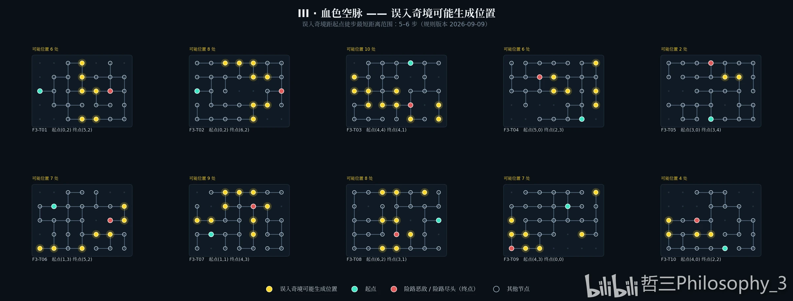

误入奇境 · III 血色空脉
III 血色空脉的 10 个基底（F3-T01 ~ F3-T10）。这一层误入奇境距起点徒步最短 5-6 步（规则版本 2026-09-09），基底网格为 7 列 × 5 行，每张图 1 个险路恶敌（红色终点）。
坐标记作 (x, y)：x 为自左起的列号、y 为自下而上的行号（y=0 是最下面一行）。 下表「可能生成位置」按 y4 → y0 分组，每组列出这一行上可能的 x。

内容出处
逐点转写自 B站 UP主 哲三Philosophy_3 的 III 层拼图（原图见上方），40 个基底 的核对方法与数据口径见 黑流树海 页。未在图上标注的位置一律不列， 不做推断补全。
| 基底 | 可能位置 | 起点 | 终点 | 误入奇境可能生成位置（y 行 → x 列） |
|---|---|---|---|---|
| F3-T01 | 6 | (0,2) | (5,2) | y4: 3,4 ｜ y2: 3,4 ｜ y1: 3 ｜ y0: 3 |
| F3-T02 | 8 | (0,2) | (6,2) | y4: 4 ｜ y3: 4,5 ｜ y1: 4,5 ｜ y0: 2,3,4 |
| F3-T03 | 10 | (4,4) | (4,1) | y3: 0 ｜ y2: 0,1,3 ｜ y1: 1,2,3,6 ｜ y0: 4,6 |
| F3-T04 | 6 | (5,0) | (2,3) | y4: 6 ｜ y3: 3 ｜ y2: 3,4,6 ｜ y1: 6 |
| F3-T05 | 2 | (3,0) | (3,4) | y3: 4,5 |
| F3-T06 | 7 | (1,3) | (5,2) | y3: 6 ｜ y2: 6 ｜ y1: 4,5 ｜ y0: 0,1,3 |
| F3-T07 | 9 | (1,1) | (4,3) | y4: 2,3,4 ｜ y3: 2,5 ｜ y2: 0,1,4 ｜ y1: 4 |
| F3-T08 | 8 | (6,2) | (3,1) | y4: 2,3,5 ｜ y2: 2,3 ｜ y1: 4 ｜ y0: 2,3 |
| F3-T09 | 7 | (4,3) | (0,0) | y4: 6 ｜ y2: 0 ｜ y1: 0,1,5 ｜ y0: 1,2 |
| F3-T10 | 4 | (4,0) | (2,2) | y2: 0 ｜ y1: 0,2,3 |